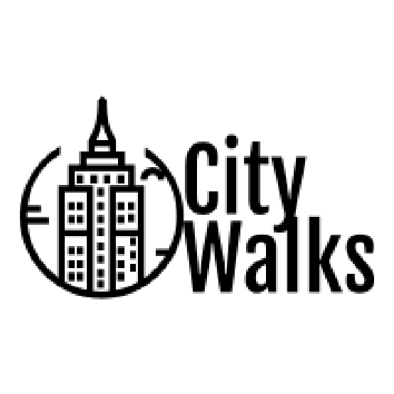
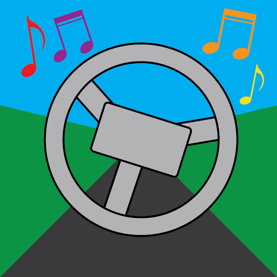
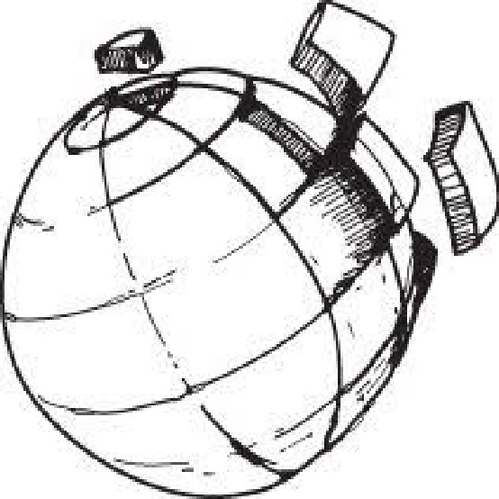
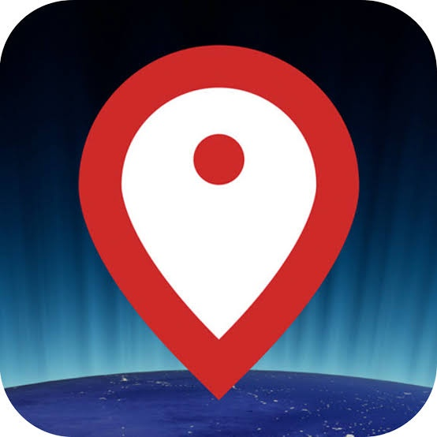

Bienvenue dans la section Explorer le monde
Bienvenue, chers explorateurs du monde virtuel ! Je suis ravi de vous accueillir dans cet espace dédié à des sites web fascinants qui vous permettront de découvrir des lieux incroyables à travers le monde, tout en restant confortablement chez vous. Vous aurez l'opportunité de vivre des expériences immersives et de vous immerger dans des environnements variés comme si vous y étiez réellement. Explorez ces sites avec curiosité et émerveillement, et laissez-vous transporter par des découvertes uniques. Chaque visite est une chance de vivre de nouvelles aventures et de vous inspirer. Nous sommes impatients de vous accompagner dans cette exploration virtuelle et de vous offrir des expériences enrichissantes. Revenez souvent pour découvrir encore plus de merveilles et continuer à enrichir vos connaissances. Votre voyage virtuel commence ici, et nous sommes ravis de vous y guider !
Alors, que cherchez-vous ?

- Les sites pour parcourir des lieux magnifiques à travers le monde en Voir
Les sites pour parcourir des lieux magnifiques dans le monde en
Citywalks
CityWalks est un site qui offre des visites virtuelles en direct de diverses villes, permettant aux utilisateurs de découvrir des attractions et des sites touristiques en temps réel grâce à des diffusions en direct.
WorldCam
WorldCam propose des flux en direct de caméras du monde entier, permettant aux utilisateurs de visionner des vues en temps réel de lieux célèbres, de paysages urbains et de scènes naturelles.
Window-Swap
Window-Swap permet aux utilisateurs de découvrir des vues de fenêtres du monde entier en échangeant des vidéos de leurs propres fenêtres, offrant ainsi un aperçu unique de la vie quotidienne dans divers endroits.
Drivenlisten
Drivenlisten permet de parcourir des lieux dans le monde comme si vous conduisiez, tout en écoutant de la musique, offrant une expérience immersive de voyage virtuel.
Radio Garden
Radio Garden permet d'écouter en direct des stations de radio du monde entier en naviguant sur une carte interactive.
Driven and Listen
Driven and Listen est un site web qui permet aux utilisateurs de parcourir des villes du monde entier en simulant une expérience de conduite tout en écoutant de la musique et des sons ambiants de la ville.
MapCrunch
MapCrunch est un site web qui permet aux utilisateurs de voyager virtuellement dans le monde en se déplaçant aléatoirement sur Google Street View, offrant ainsi une expérience immersive de découverte de différents lieux.
GeoGuessr
GeoGuessr est un jeu en ligne qui plonge les utilisateurs dans des images de Google Street View, les défiant de deviner leur emplacement exact sur la carte en se basant sur des indices visuels.